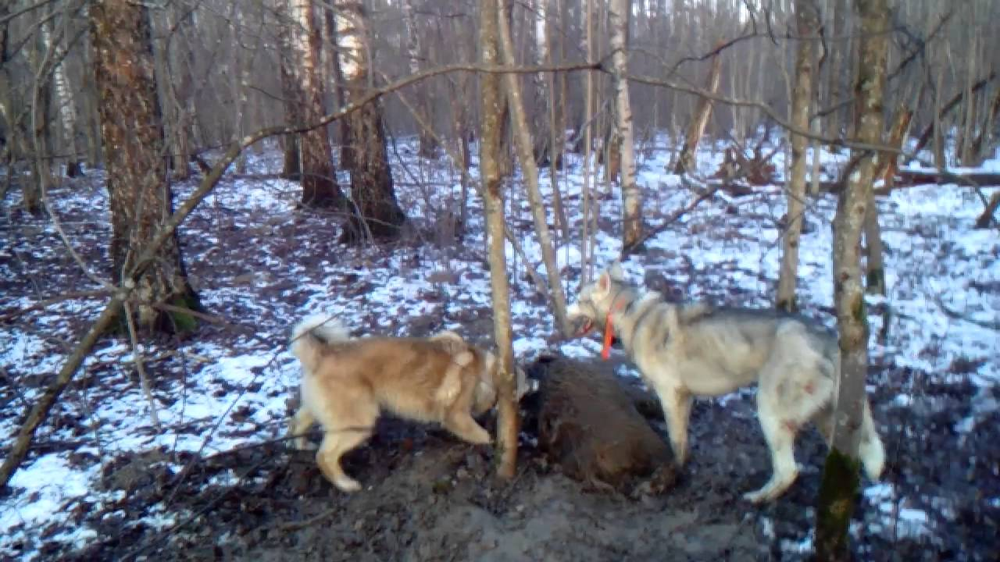
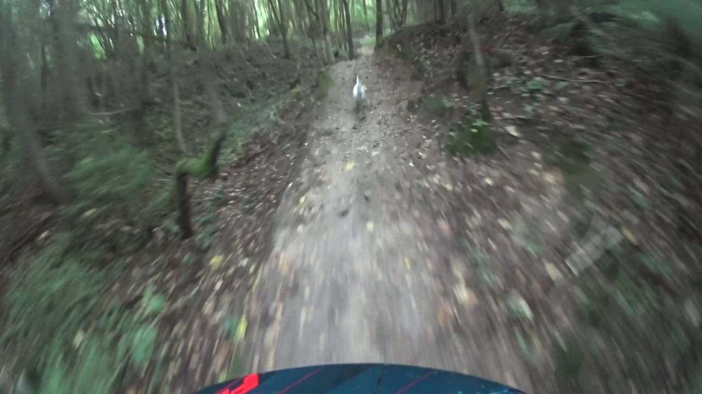
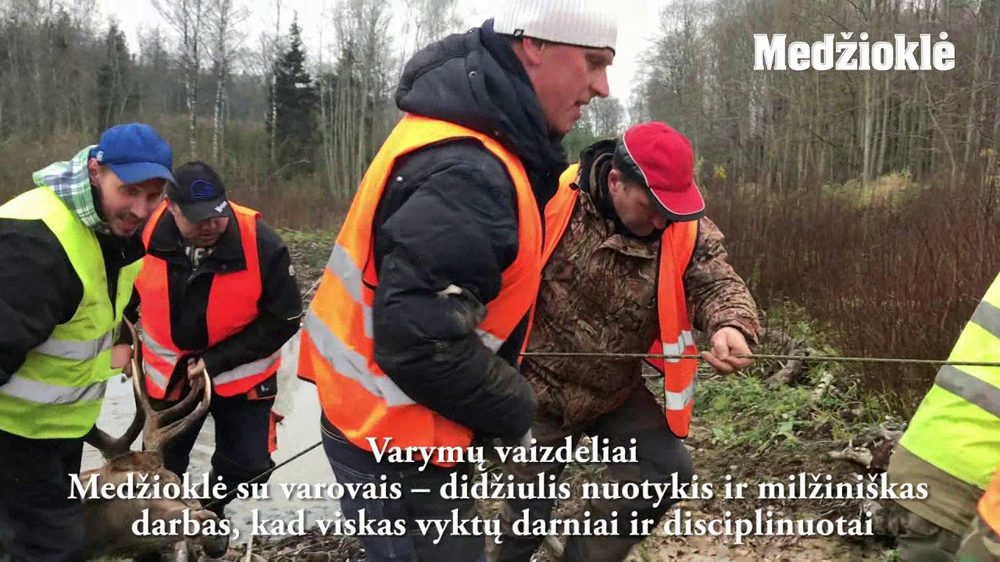

Medžioklė - Ūkininko patarėjas
2020.10.29 07:08
Pagrindinis Apie mus Prenumerata Prenumerata Lietuvoje Prenumerata užsienyje Reklama Pranešimai Verta žinoti Video Konkursai Saldi vasara Pasibaigęs Mano vasaros darbai Pasibaigęs Birželis – braškių mėnuo Pasibaigęs Žurnalo „RASOS” prenumeratos konkursas Pasibaigęs Pamačiau-įamžinau Pasibaigęs Fotokonkursas “Ūkininkaitė 2014″ Pasibaigęs Fotografijų konkursas „Jaukumas“ Pasibaigęs Kontaktai Kaip pirkti? Pagalba Prisijungti Registruotis
Pagrindinis Apie mus Prenumerata Prenumerata Lietuvoje Prenumerata užsienyje Reklama Pranešimai Verta žinoti Video Konkursai Saldi vasara Pasibaigęs Mano vasaros darbai Pasibaigęs Birželis – braškių mėnuo Pasibaigęs Žurnalo „RASOS” prenumeratos konkursas Pasibaigęs Pamačiau-įamžinau Pasibaigęs Fotokonkursas “Ūkininkaitė 2014″ Pasibaigęs Fotografijų konkursas „Jaukumas“ Pasibaigęs Kontaktai Kaip pirkti? Pagalba Prisijungti Registruotis Pagrindinis Ūkininko patarėjas Agropolitika Organizacijos Rinka Augalininkystė Gyvulininkystė Bitininkystė Paukštininkystė Pienininkystė Technika Aplinka, miškai Kultūra Rasos Mėnesio darbai Sausis Vasaris Kovas Balandis Gegužė Liepa Birželis Rugpjūtis Rugsėjis Spalis Lapkritis Gruodis Aplinka Dendrologija Gėlynas Palangė Floristika Lysvė Sodas Su eko ženklu Klausk specialisto Gamta Įspūdžiai Kaimo laikraštis Knygos Apie mus Reklama Pranešimai Verta žinoti Kontaktai Šeima Namai Pažintys Psichologija Sveikata Maistas Grožis Mada Rankdarbiai Augintiniai Žalioji oazė Margumynai
Skelbimai
Gyvulininkystė (2)
Paukščiai (2) Meniu Agropolitika Amatai Visuomenė Organizacijos Rinka Augalininkystė Gyvulininkystė Bitininkystė Paukštininkystė Pienininkystė Technika Aplinka, miškai Kultūra Verslas Ūkis Laisvalaikis Teisėtvarka Kooperacija Kaimo turizmas Maistas Pinigai Sveikatos apsauga Medžioklė AKM Politika „Pyragų karalius“ Sodininkystė Jaunimas Renginiai Agroekonomika Žuvininkystė Turi bėdų? Kreipkis į „Ūkininko patarėją“! Istorija Statybos Extra Aktualijos Šeima Jaunoms mamoms Namai Pažintys Psichologija Sveikata Maistas Grožis Mada Rankdarbiai Augintiniai Žalioji oazė Margumynai Aplinka Dendrologija Gėlynas Palangė Floristika Lysvė Sodas Pažintys Su eko ženklu Klausk specialisto Gamta Įspūdžiai Mėnesio darbai Sausis Vasaris Kovas Balandis Gegužė Birželis Liepa Rugpjūtis Rugsėjis Spalis Lapkritis Gruodis Žvilgsnis Verslas Spausdintos knygos Elektroninės knygos Kaimo laikraštis 2020 Spalis Ketvirtadienis29
Ermelinda, Gelbutas, Gelgauda, Gelgaudas, Narcius, Narcizas, Narcys, Tolvydas, Tolvyda, Tolvydė, Violeta, Violė, Žeimanta, Žeimantas, Žeimantė, Žemvaldas
Karšta bulvė
Ekologinio ūkininkavimo skatinimas – tik žodžiai
Skaityti toliau...Visos naujienos
Orai šiandien
Kaunas +10,0 °C rūkas Vėjas: 2,6 m/spietų Slėgis: 1012 hPa
Drėgnumas: 87% , krituliai: nėra
Mėnulio fazė: Priešpilnis
Saulė teka: 08:20 , leidžiasi: 17:55
Dienos ilgumas: 09:35
Atnaujinta: 2020-10-29 08:29
Išsamesnės prognozės
Apdovanojimas
www.ukininkopatarejas.ltinternetinė svetainė apdovanota
tarptautinės parodos medaliu
"Sprendimų ratas 2014"
------------------------------------------------
Lietuvos žemės ūkio bendrovių
asociacijos surengtoje apklausoje
„Ūkininko patarėjas“ pripažintas
naudingiausiu agroverslo visuomenei
2014-ųjų leidiniu.
Naudinga
Kalorijų skaičiuoklėKūno masės indeksas
Metabolizmo rodikliai
Medžioklė
NaujienosKulkos šernų neįveikė. Gal pavyks strėlėmis?
Šis įrašas buvo paskelbtas Medžioklė Ūkininko patarėjas temoj 2018-04-10 . Paskelbė r.nenortas . 2018-04-10 Visuomenė balandžio 1-osios pokštu palaikė kelių parlamentarų siūlymą leisti medžioti gyvūnus lankais. Bet toks daugiausia valdančiosios „valstiečių“ frakcijos narių pasirašytas Medžioklės įstatymo pataisų projektas jau įregistruotas Seimo posėdžių sekretoriate. Ar tai nebūtų tik daugiau kančių...Skaityti toliau...
Šernų medžiotojų sąskaitose – tušti pažadai
Šis įrašas buvo paskelbtas Medžioklė Ūkininko patarėjas temoj 2018-01-06 . Paskelbė r.nenortas . 2018-01-06 Praėjusiais metais Lietuvoje afrikinio kiaulių maro (AKM) atvejų laukinėje faunoje užfiksuota daugiau kaip tūkstantyje vietų. Maro užkratas nustatytas 2 245 šernams, iš jų 282 buvo sumedžioti, o 1 963 rasti nugaišę. Siekiant mažinti AKM plitimą,...Skaityti toliau...
Kur trys pešasi, laimi vilkai
Šis įrašas buvo paskelbtas Medžioklė Ūkininko patarėjas temoj 2017-07-08 . Paskelbė r.nenortas . 2017-07-08 Nijolė BARONIENĖ „ŪP“ korespondentė „Vilko pilko nebijau, nebijau, nebijau, nebijau Su kačerga nuvaikau, nuvaikau, nuvaikau “ Medžiotojai tikina, kad vilkų priviso tiek, jog teks prisiminti šią tarpukario laikus menančią dainelę. Šiltuose kabinetuose sėdintys valdininkai drąsina, kad...Skaityti toliau...
Didieji upių „architektai“ pridaro daug žalos (nuotraukų galerija)
Šis įrašas buvo paskelbtas Medžioklė Ūkininko patarėjas temoj 2017-05-09 . Paskelbė r.nenortas . 2017-05-09 Šiaulių rajono Trauleinių kaime buvusioje senelio žemėje Birutė Abromavičienė įveisė mišką. Ant kalvelių gražiai auga jų puoselėjami ir stropiai prižiūrimi medeliai. Prieš septynerius metus 7,01 ha plote pasodino 2 500 juodalksnių, 6 200 karpuotųjų beržų,...Skaityti toliau...
Sumedžiojo vienaragį stirniną
Šis įrašas buvo paskelbtas Medžioklė Ūkininko patarėjas temoj 2017-04-01 . Paskelbė r.nenortas . 2017-04-01 Praėjusio medžioklės sezono „derlius“ Kupiškio medžiotojus nudžiugino ne tik gerų trofėjų gausa, bet ir neregėtomis įdomybėmis. „Lietuvoje ir Europoje esu matęs ir vertinęs per kelis tūkstančius trofėjų, bet tokios gamtos anomalijos niekur nemačiau: vienaragis stirninas,...Skaityti toliau...
Medžioklės plotai kaitina aistras
Šis įrašas buvo paskelbtas Medžioklė Ūkininko patarėjas temoj 2017-02-23 . Paskelbė r.nenortas . 2017-02-23 Seimo narys liberalas Eugenijus Gentvilas įregistravo Medžioklės įstatymo pataisas, kurios, jo nuomone, turėtų įtvirtinti miško savininkų teisių viršenybę prieš medžioklės plotų naudotojus, leistų sumažinti jų dydžius, sudarytų savininkams galimybę jų valdose kurti naujus medžioklės vienetus,...Skaityti toliau...
Nauja galimybė medžiokliams
Šis įrašas buvo paskelbtas Medžioklė Ūkininko patarėjas temoj 2017-01-07 . Paskelbė r.nenortas . 2017-01-07 Vilniuje erdvią parduotuvę atidarė internetinės prekybos portalas www.e-medziokle.lt. Tai antroji šios įmonės reali parduotuvė (pirmoji veikia Kupiškyje). Taigi šalies medžiotojai sostinėje prekes galės apžiūrėti ir pasirinkti ne tik „Oksalio“, „Vilniaus ginklų“, „Zala arms“ ir „Vollit“...Skaityti toliau...
Komercinės medžioklės ypatumai
Šis įrašas buvo paskelbtas Medžioklė Ūkininko patarėjas temoj 2016-11-26 . Paskelbė r.nenortas . 2016-11-26 „Ūkininko patarėjo“ puslapiuose ne kartą rašėme apie medžiotojų ir ūkininkų konfliktus dėl pasėliams ir ganykloms laukinių gyvūnų daromos žalos. Ūkininkai itin nepatenkinti urėdijų komercinės medžioklės plotais. Žemdirbių teigimu, juose dirbtinai didinamas žvėrių skaičius, taip siekiant...Skaityti toliau...
Ministerija atsibudo: Šilalėje jau medžiojami vilkai
Šis įrašas buvo paskelbtas Medžioklė Ūkininko patarėjas temoj 2016-09-29 . Paskelbė r.nenortas . 2016-09-29 Aplinkos ministerija pagaliau išgirdo Šilalės ūkininkų skundus dėl nuo ankstaus pavasario pjaunamų ir žalojamų gyvulių – siekiant sumažinti ūkiniams gyvūnams daromą žalą, rugsėjo 19 d. pagaliau išdavė leidimą Šilalės medžiotojams „išimti iš gamtinės aplinkos 2...Skaityti toliau...
Nušautas stirninas atneš ne naudos, o nuostolių
Šis įrašas buvo paskelbtas Medžioklė Ūkininko patarėjas temoj 2016-07-16 . Paskelbė r.nenortas . 2016-07-16 Radviliškio rajone sulaikytas aplinkos apsaugos inspektoriams žinomas brakonierius V. J., kuris nušovė suaugusį stirniną. 1976 m. gimusiam V.J. gresia didesnė nei 1 700 Eur bauda, dar reikės pakloti 1 593 Eur už gamtai padarytą žalą. Šiaulių...Skaityti toliau... ← Senesni įrašai
Kontaktai
UAB “Ūkininko patarėjas”
Įmonės kodas 133122411
PVM mokėtojo kodas LT331224113
Gedimino g. 27, LT-44319 Kaunas
Tel. (8-37) 225 300
Faksas (8-37) 223 452
El. paštas: redakcija@up.lt
Duomenys apie UAB “Ūkininko patarėjas” kaupiami ir saugomi LR Juridinių asmenų registre
© 2020, UAB "Ūkininko patarėjas" | Visos teisės saugomos
Svetainės struktūra | Prekių pirkimo - pardavimo el. parduotuvėje taisyklės
Susisiekite su mumis
Turite klausimų? Mes Jums padėsime.
Baigti pokalbį Dėl geresnės puslapio paslaugų kokybės šiame tinklapyje naudojami slapukai (angl. cookies) kurie renka informaciją apie tinklapyje esančių lankytojų skaičių ir jų veiksmus šiame tinklapyje. Naršydami toliau Jūs sutinkate, kad slapukai būtų įrašyti Jūsų kompiuteryje iki naršymo tinklapyje pabaigos. Slapukų politika Sutinku- Superkompaktiškas termovizorius AXION | Medžioklė
- Ančių Medžioklė - Kur pavalgyti? Maisto apžvalgos, kritika ...
- Filmai internetu, filmai online, nemokami filmai
- Medžioklė / The Hunt (2020) online
- Medžioklė - Ūkininko patarėjas
- Prasideda akcija „Medžioklė“ | Miske.lt
- Medžioklė / The Hunt 2020 online lietuvių kalba
- Medžioklė / The Hunt (2020) » Filmai ir serialai online ...
- Medžioklė - vertimai, sinonimai, gramatika, statistika ...
- Žiūrėti Raudonojo Spalio Medžioklė Online nemokamai
- Superkompaktiškas termovizorius AXION | Medžioklė
Medžioklė / The Hunt (2012) BDRip. Kraujas ir šokoladas. Dramos, Romantiniai, Fantastiniai, Siaubo, Filmai. 2007. 1 val 38 min. Kraujas ir šokoladas / Blood and Chocolate (2007) DVDRip.
- Ančių Medžioklė - Kur pavalgyti? Maisto apžvalgos, kritika ...
GERAS FILMAS Medžioklė / The Hunt 2020 online lietuvių kalba nemokamai HD kokybė. Žiūrėkite naujausią filmą NEMOKAMAI. Vienas žiurimiausių filmų Lietuvoje.
- Filmai internetu, filmai online, nemokami filmai
Gero termovizoriaus reikėtų kiekvienam medžiotojui, norinčiam medžioti ne tik sėkmingai, bet ir etiškai. Jis padeda prieš šūvį įsitikinti, ar prie viliojimo vietos priėjusios šernės aukštoje žolėje neseka jaunikliai, kiek apskritai bandoje šernų, kuris didesnis, kuris mažesnis. Su Axion gyvūną galima įžiūrėti ir per gana tankius krūmus, tad galima pasirengti jo ...
- Medžioklė / The Hunt (2020) online
Filmas sukurtas pagal 1984 m. JAV išleistą (ir išverstą į lietuvių kalbą) Tomo Clancy knygą „Raudonojo spalio“ medžioklė“, kuri tapo bestseleriu. Romanas ir filmas sukurti pagal tikrus įvykius.
- Medžioklė - Ūkininko patarėjas
Ančių Medžioklė - maisto apžvalgos, vertinimai ir rekomendacijos. Kažkaip pagalvojau, kad reikėtų prisiminti praėjusį šeštadienį praūžusią We Will Grill fiestą.
- Prasideda akcija „Medžioklė“ | Miske.lt
Prasideda akcija „Medžioklė“ Vakar Aplinkos apsaugos departamentas tauriųjų elnių ir briedžių apsaugai stiprinti intensyviausiu jų rujos metu pradėjo akciją „Medžioklė“. Mat rujodami šie žvėrys įnirtingai ieško naujų teritorijų, patelių, varžovų, todėl nėra tokie budrūs ir gali tapti lengvu brakonierių grobiu.
- Medžioklė / The Hunt 2020 online lietuvių kalba
Miske.lt naujienos medžiotojams, straipsniai apie medžioklę, medžioklės vaizdo įrašai, medžioklės kalendorius, medžioklės įstatymai ir komentarai.
- Medžioklė / The Hunt (2020) » Filmai ir serialai online ...
Vaizdo įrašas pilno filmo "Medžioklė (2020)" įsijungia geroje kokybėje FULL HD 720 ir 1080 nemokamai, be registracijos. Žiūrėti Treileris. Filmas prasidės po trumpos reklamos * Brangūs lankytojai, reklama leistuve nuo mūsų nepriklauso. Atsiprašome...
- Medžioklė - vertimai, sinonimai, gramatika, statistika ...
Filmai internetu ir filmai online. Naujausi serialai, parduotas gyvenimas online, suzeisti pauksciai online
- Žiūrėti Raudonojo Spalio Medžioklė Online nemokamai
Medžioklės reikmenys medžioklė, žvejyba. X. Dėl geresnės Skelbiu.lt paslaugų kokybės naudojame slapukus (angl. cookies). Naršydami toliau, patvirtinate, kad sutinkate su slapukais. Tai bet kada galėsite atšaukti, pakeisdami nustatymus. Skelbiu.lt slapukų politika.
Medžioklė / The Hunt (2012) BDRip. Kraujas ir šokoladas. Dramos, Romantiniai, Fantastiniai, Siaubo, Filmai. 2007. 1 val 38 min. Kraujas ir šokoladas / Blood and Chocolate (2007) DVDRip.
GERAS FILMAS Medžioklė / The Hunt 2020 online lietuvių kalba nemokamai HD kokybė. Žiūrėkite naujausią filmą NEMOKAMAI. Vienas žiurimiausių filmų Lietuvoje.
Gero termovizoriaus reikėtų kiekvienam medžiotojui, norinčiam medžioti ne tik sėkmingai, bet ir etiškai. Jis padeda prieš šūvį įsitikinti, ar prie viliojimo vietos priėjusios šernės aukštoje žolėje neseka jaunikliai, kiek apskritai bandoje šernų, kuris didesnis, kuris mažesnis. Su Axion gyvūną galima įžiūrėti ir per gana tankius krūmus, tad galima pasirengti jo ...
Filmas sukurtas pagal 1984 m. JAV išleistą (ir išverstą į lietuvių kalbą) Tomo Clancy knygą „Raudonojo spalio“ medžioklė“, kuri tapo bestseleriu. Romanas ir filmas sukurti pagal tikrus įvykius.
Ančių Medžioklė - maisto apžvalgos, vertinimai ir rekomendacijos. Kažkaip pagalvojau, kad reikėtų prisiminti praėjusį šeštadienį praūžusią We Will Grill fiestą.
Prasideda akcija „Medžioklė“ Vakar Aplinkos apsaugos departamentas tauriųjų elnių ir briedžių apsaugai stiprinti intensyviausiu jų rujos metu pradėjo akciją „Medžioklė“. Mat rujodami šie žvėrys įnirtingai ieško naujų teritorijų, patelių, varžovų, todėl nėra tokie budrūs ir gali tapti lengvu brakonierių grobiu.
Miske.lt naujienos medžiotojams, straipsniai apie medžioklę, medžioklės vaizdo įrašai, medžioklės kalendorius, medžioklės įstatymai ir komentarai.
Vaizdo įrašas pilno filmo "Medžioklė (2020)" įsijungia geroje kokybėje FULL HD 720 ir 1080 nemokamai, be registracijos. Žiūrėti Treileris. Filmas prasidės po trumpos reklamos * Brangūs lankytojai, reklama leistuve nuo mūsų nepriklauso. Atsiprašome...
Filmai internetu ir filmai online. Naujausi serialai, parduotas gyvenimas online, suzeisti pauksciai online
Medžioklės reikmenys medžioklė, žvejyba. X. Dėl geresnės Skelbiu.lt paslaugų kokybės naudojame slapukus (angl. cookies). Naršydami toliau, patvirtinate, kad sutinkate su slapukais. Tai bet kada galėsite atšaukti, pakeisdami nustatymus. Skelbiu.lt slapukų politika.
  